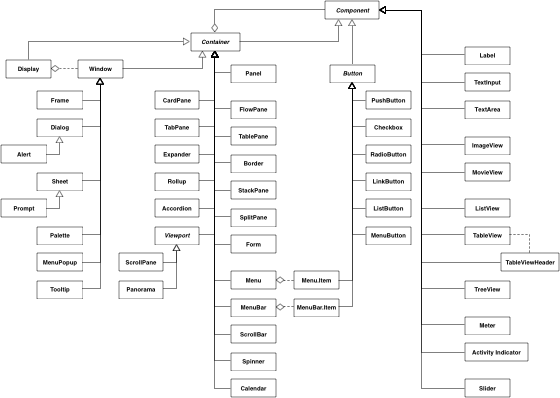
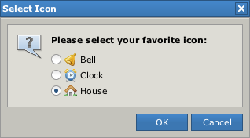
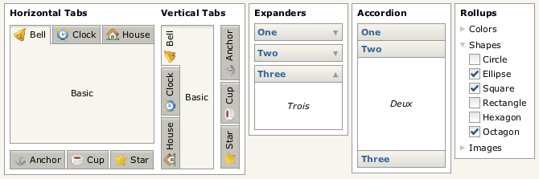
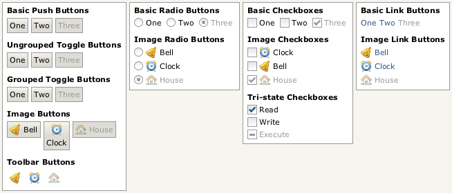
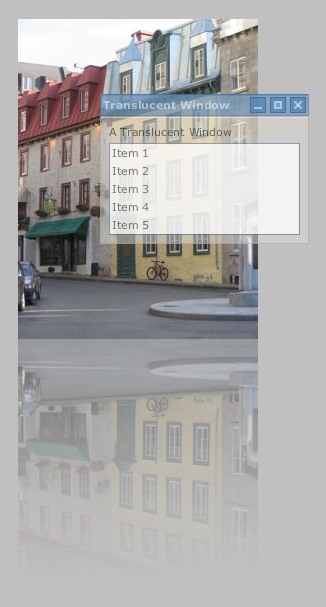

Like most modern development platforms, Pivot provides a comprehensive set of foundation classes that together comprise a "framework". These classes form the building blocks upon which more complex and sophisticated applications can be built.
Pivot classes are grouped into the following primary categories:
The classes in each category are packaged and distributed in a corresponding library or set of libraries:
Most of Pivot's classes live in the WTK libraries.
The design of WTK is based on the model-view-controller architecture employed by many current user interface toolkits. In WTK, model data is represented by the generic collection classes defined in the Core library (most commonly org.apache.pivot.collections.List and org.apache.pivot.collections.Map). The component classes discussed in the next section represent the controller, which acts as the intermediary between the model data and the component's "skin", the MVC view.
The skin defines the actual appearance of the component, as a component has no inherent visual representation. The skin also defines how the component responds to user input including keyboard and mouse events. Components may have multiple skins (though only a single skin can be installed at a time), and skins can be dynamically changed or applied at runtime. However, the existence of the skin should be effectively transparent to most developers, as skins do not expose any public API. All interaction with the skin takes place via the skin's component.
Skins can be "styled" in a manner similar to CSS. Through the component, a skin may expose a set of style properties such as "color" and "font" that a user can change to achieve a custom application appearance without having to write a new skin. By default, all components use the skin classes defined by the Terra look and feel. The skins in this package provide considerable flexibility in setting style properties. Almost every aspect of a Terra skin's appearance can be varied via a style property. Terra also provides customizable "color schemes" that allow a designer to easily replace the color palette for an entire application.
The appearance of some components can be further customized using "renderers", which are essentially "lightweight components" used to paint the content of the actual component. For example, WTK buttons allow a caller to define the renderer used to paint the button's data, and list views support customized painting of list items via a renderer. Renderers allow large collections of data to be presented very efficiently, as the renderer is used to "rubber stamp" the content, instead of creating an actual component instance for each data element, which would require more memory and processor time.
Additionally, using renderers, component content is painted the same regardless of the skin that is currently applied. This allows applications to present information consistently as skins are updated or new skins are released.
Skins and renderers use the Java2D API to draw themselves. See the Java2D Tutorial for more information on Java2D.
The following diagram shows the WTK component class structure:

WTK class hierarchy (large version).
As shown in the diagram, all WTK components extend an abstract base class called Component. Some classes extend Component directly, and others extend another abstract class named Container that itself extends Component. Non-container components are used to present data, collect user input, or both. Container components, as their name implies, contain other components, creating a component hierarchy. Containers serve to arrange and present their child components.
The root of the container hierarchy is the "display", represented by an instance of the Display class. The only allowed direct descendants the display are the window classes, which act as entry points into the user interface. Window classes can contain any type of component except other windows and the display itself. Windows also have an optional owner; owned windows always remain on top of their owner and are automatically hidden when their owner is hidden.
The window classes include the following types:
Window - Base window class; it is not abstract and is the most basic means by which content may be placed on the screen. It simply provides an undecorated region in which other components may be placed.
Frame - A window with a title bar and border for dragging and resizing.
Dialog - A frame that is generally used for collecting user input (engaging in a "dialog" with the user); may optionally be "modal", blocking input to its owner.
Alert - A dialog that is generally used to present brief notifications to the user.
Sheet - A window that, like a dialog, is generally used for collecting user input; however, unlike dialogs, sheets always have an owner, and are always modal over the owner's content.
Prompt - A sheet that is generally used to present brief notifications to the user; the sheet equivalent of Alert.
Palette - A floating tool palette window.
Tooltip - A small, popup-like window that disappears as soon as the user moves the mouse.
Below is an example of a Pivot dialog:

A Pivot dialog.
Other Pivot containers can be loosely grouped into three categories: layout, navigation, and composite.
Layout containers are used primarily to arrange other components on the screen. Layout containers include:
FlowPane - Container that arranges components in a horizontal line, wrapping when contents don't fit on a single line.
BoxPane - Container that arranges components in a line, either vertically or horizontally.
TablePane - A container that lays out its children in a two-dimensional table structure, optionally spanning table cells.
Border - A container with an optional title that draws a border around a single content component.
StackPane - Arranges components in layers, like a stack of transparencies.
SplitPane - Provides a draggable divider between two components allowing a user to dynamically change the size of each; may be horizontal or vertical.
Form - Arranges components in a "form" layout with labels to the left and optional flag messages (e.g. to alert a user to input errors) to the right.
Panel - A container that performs no layout, allowing the application to specify absolute component positions and sizes.
Navigation containers are used to maximize screen real estate, showing or hiding their children as needed. Navigation containers include:
CardPane - A simple "card stack" of components, only one of which is visible at a time.
TabPane - Similar to CardPane but with built-in "tabs" for navigation; may optionally be "collapsed" such that only the tab buttons show.
Accordion - Similar to TabPane, but subcomponents are presented like the folds of an accordion, with headers for navigating between panels.
Expander - Similar to a border but collapsible such that only the title shows.
Rollup - Similar to Expander but can contain an aribitrary number of child components; when collapsed, only the first component is visible. Can be nested to create the appearance of a "tree" structure.
Viewport - Abstract base class for a scrollable region. Viewport sublcasses include:
The image below is an example of some Pivot navigation containers:

Some Pivot navigation containers.
Composites are simply components that are implemented using other components. For example, a ScrollBar is a container consisting of of two button components and a "thumb", the draggable area that allows the user to scroll by clicking and dragging the mouse. Composites include:
Menu - Displays a list of actions to the user. Generally displayed in a popup context menu or as part of a menu bar or menu button.
MenuBar - Provides access to a collection of sub-menus.
ScrollBar - Allows a user to select one of a range of values using up/down buttons or a draggable "thumb" that also represents an extent value. Most often used to facilitate scrolling in a scroll pane.
Spinner - An "up/down" control allowing a user to cycle through a range of pre-defined values.
Slider - Allows a user to select one of a range of values by dragging the mouse.
Label - A simple component used to display an uneditable block of (optionally wrapped) text.
ImageView - A component that displays a static, optionally scaled, image.
Button - Abstract base class for buttons, which include:
The image below shows some examples of Pivot button components:

Some Pivot buttons.
Pivot applications can be localized using the standard Java localization APIs, including resources and resource bundles. In addition, Pivot supports localization using JSON-based resource files, which are more powerful and flexible than Java's standard properties files: hierarchical resource data is much more easily represented, and strings can be encoded in UTF-8 rather than ISO-8859, making it easier to author content for locale's with characters that are not available in ISO-8859.
Pivot applications can be constructed entirely in Java code, but it is often more efficient (and readable) to define a Pivot application using XML. Pivot supports an XML markup language called WTKX to help simplify user interface development. Every component has a corresponding XML element that allows a developer to create an instance of it without writing any Java code. Most component properties accessible from Java are also supported in XML, and, in general, the structure of a user interface can be entirely defined in markup - only application logic and event handling needs to be written in Java. This enables project teams to delegate user interface design and development to non-technical design resources and coding tasks to developers, facilitating a clean separation of responsibility.
The following is a simple WTKX example that would create two buttons, labeled "OK" and "Cancel", arranged in a horizontal line:
<BoxPane xmlns:wtkx="http://pivot.apache.org/wtkx"
xmlns="org.apache.pivot.wtk">
<PushButton buttonData="OK"/>
<PushButton buttonData="Cancel"/>
</BoxPane>
Note that the button text is specified using the "buttonData" attribute. Simple string-based data such as this is often sufficient; however, some component properties, including button data, cannot always be easily expressed using XML attributes. For example, a designer may want to create a button containing both an image and a label. WTKX supports the expression of typed data directly in XML using XML namespaces, allowing developers to pass complex data types to components without needing to write Java code to do so. XML namespace prefixes are translated to Java package names by the loader; an instance of org.apache.pivot.wtk.content.ButtonData, which defines "icon" and "text" properties, is instantiated and passed as the data to each button as follows:
<BoxPane xmlns:wtkx="http://pivot.apache.org/wtkx"
xmlns:content="org.apache.pivot.wtk.content"
xmlns="org.apache.pivot.wtk">
<PushButton>
<buttonData>
<content:ButtonData icon="@ok.png" text="OK"/>
</buttonData>
</PushButton>
<PushButton>
<buttonData>
<content:ButtonData icon="@cancel.png" text="Cancel"/>
</buttonData>
</PushButton>
</BoxPane>
The default button renderer is capable of handling this type of data and automatically draws the button appropriately.
Note that the icon values are preceded by an '@' symbol. This is a "hint" to the WTKX loader that the following string should be treated as a URL; specifically, a URL that is relative to the source WTKX file. The special syntax is required because XML does not natively support a URL data type. WTKX also supports similar hints for embedding resource values in a WTKX file as well as referring to object instances in markup. This is discussed in more detail in later sections.
The org.apache.pivot.wtk.effects package provides support for adding visual richness to Pivot applications. Effects in Pivot are implemented primarily via two types of classes: decorators and transitions. Decorators allow a caller to attach additional rendering behavior to a component, such as blurs, fades, or drop shadows. Transitions are timed behaviors that are often used to animate elements of a user interface.

Decorator example.
"Web queries" are Pivot's native means of communicating with remote data services. Fundamentally, a web query is simply an HTTP request. However, the default data format used by a web query is not HTML, but JSON. This allows a caller to effectively invoke database-like operations over the web - the HTTP methods are used in a manner that is very similar to their corresponding SQL equivalents:
| Behavior | SQL Query | HTTP Method |
| Create | INSERT | POST |
| Read | SELECT | GET |
| Update | UPDATE | PUT |
| Delete | DELETE | DELETE |
These operations, sometimes referred to as "CRUD", form the basis of the Representational State Transfer (REST) model of building web services. Pivot web queries are designed primarily to facilitate interaction with JSON-based REST services. However, they are sufficiently generic to support communication with any type of HTTP-based service, using any data format (for example, XML). This renders the classes in the org.apache.pivot.web package applicable to a broad range of server communication scenarios.
In addition to the client APIs defined in org.apache.pivot.web, the org.apache.pivot.web.server package provides classes that simplify the task of implementing and interacting with HTTP web services. QueryServlet provides an abstract base class for implementing web query servlets, and ProxyServlet provides an HTTP proxy that allows an unsigned applet to issue web queries to services outside of its origin server.
Next: Hello, World!
{kind=link}